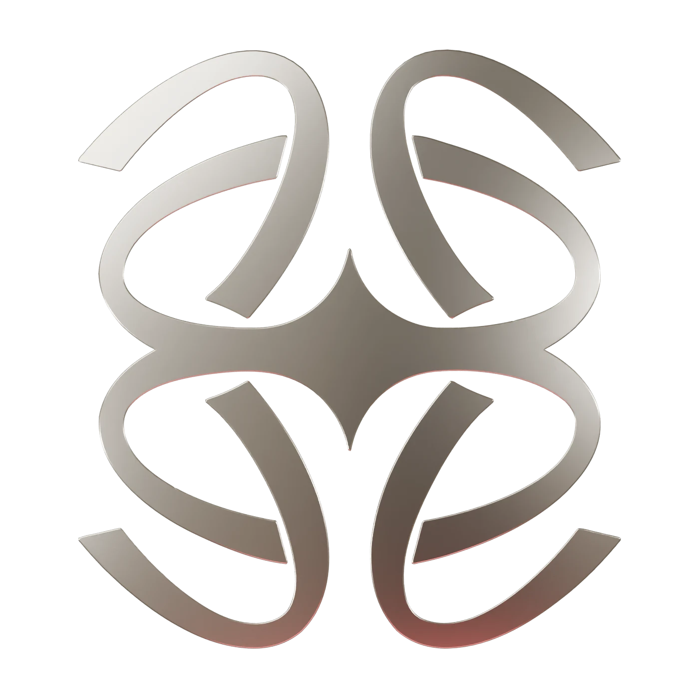
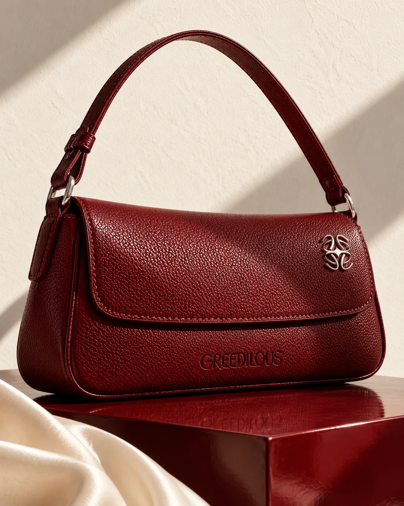
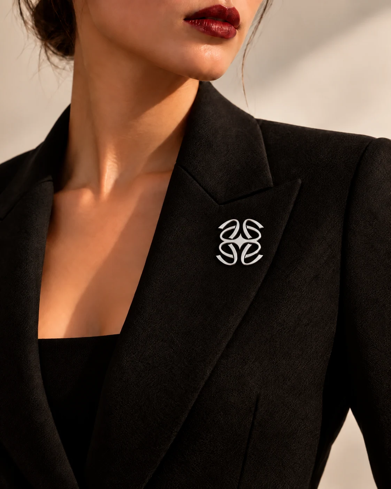
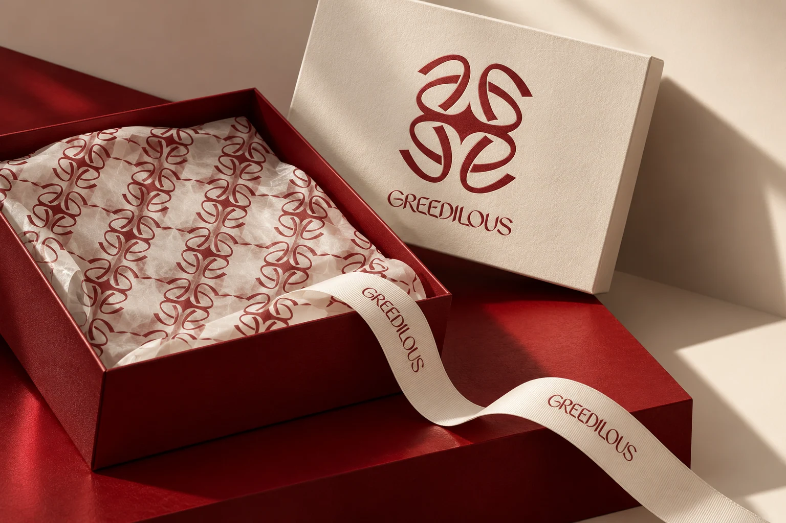
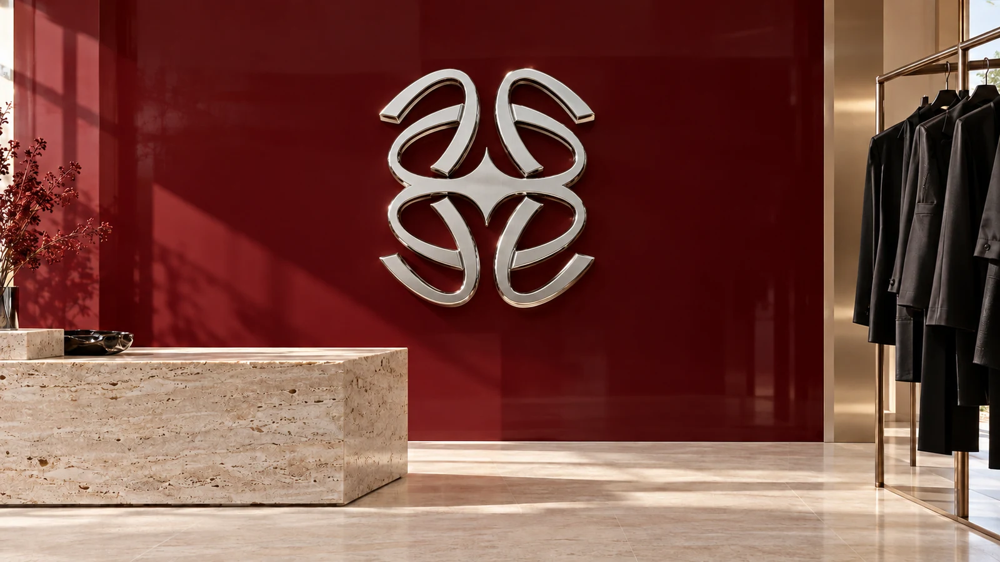

화려함의 정의
화려함을 ‘반복’이라는 언어로 정의하고,
반복의 규칙을 설정해 아이덴티티를 구체화합니다.
BE GREEDILOUS.CONCEPT 04 — SYMMETRY

반복되는 곡선.
선명해지는 나.
같은 곡선이 만나, 하나의 상징으로.
나다운 화려함, 그리디어스.




화려함을 ‘반복’이라는 언어로 정의하고,
반복의 규칙을 설정해 아이덴티티를 구체화합니다.

같은 곡선이 만나, 하나의 상징으로.
나다운 화려함, 그리디어스.



